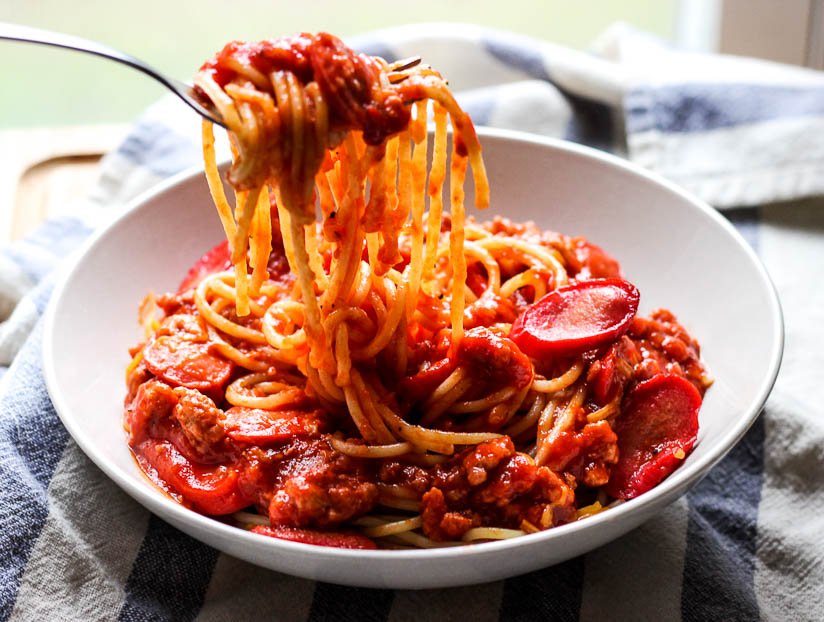

Spaghetti Sauce Recipe
This Spaghetti Sauce Recipe is flavourful, it goes well with any kind of pasta, and this recipe was taught by my mother :D
Ingredients:
- 5 Jumbo Hotdogs (Tender Juicy)
- 5 Cloves of Garlic
- 1 Medium Sized Onion
- 1/2 Big Sized Bell Pepper
- 210g of Corned Beef (Pure Foods)
- 1 Kg Sweet Filipino Style Spaghetti Sauce (UFC)
- 1 Liver Spread (Reno)
- Salt
- Pepper
- Ketchup (UFC) - Optional
- Condensed Milk (Nestle) - Optional
Steps for the Spaghetti Sauce:
-
Cut the Hotdogs diagonally like a bias cut.
-
Mince the Garlic and Onion.
-
Cube the 1/2 Bell Pepper.
-
Cook the hotdogs on a pot with oil and move it aside after done cooking.
-
Use the same pot and cook the garlic until golden brown.
-
Add the onion and cook until it is ready or golden brown.
-
Add the bell pepper and cook for 5 minutes.
-
Add the corned beef and cook until the meat is properly cooked.
-
Add the spaghetti sauce and cook until the sauce is boiling. Just stir the sauce to mix everthing together and make sure the bottom doesn't get burnt!
-
Add the reno and stir more.
-
Add salt and pepper on however you like.
-
Add Ketchup either 1/4 or 1/2 of the bottle depending on however you like.
-
Add Condesned milk either 1/4 or 1/2 of the can depending on however you like.
What the finished product should look like with pasta. Enjoy :) !
